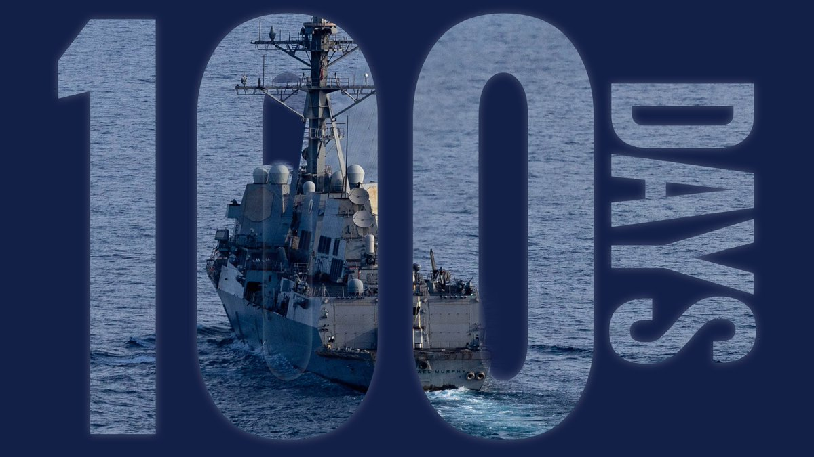
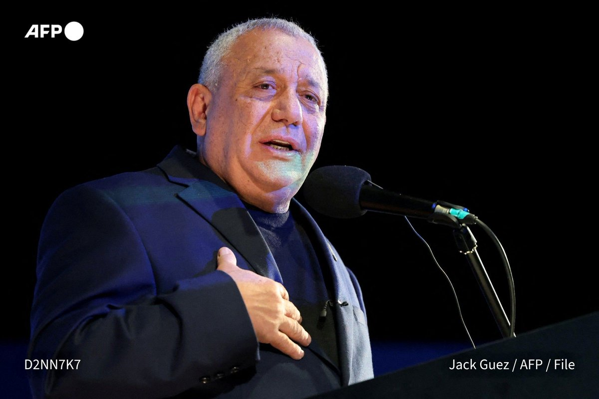

⚓ CENTCOM marked 100 days since resuming its naval blockade of Iranian ports. It says the blockade has kept at least $25 billion of Iranian crude off the market and that nothing has moved to or from Iran by sea except US-approved humanitarian aid.
🇸🇦 Houthi pressure on Saudi Arabia is growing. Reuters reports exclusively that the US ordered non-emergency diplomats and their families out of Saudi Arabia, Gulf markets fell after fresh strikes, and fear of airport attacks has people driving to Dubai instead of flying.
🛢️ Barak Ravid relayed Trump's claim that Iran is faking hits and mines to push up oil prices before the midterms, and that more oil now moves through Hormuz than before the war. An AP-NORC poll finds voters want Congress to prioritise costs and ending the Iran war. Greece says it's implementing Iran-linked sanctions.

🔇 Another quiet day for Gaza: the watched accounts posted no new Gaza or Hamas updates in the last 24 hours.
🫒 The West Bank drew the coverage. Reuters reports settler violence and olive theft have risen sharply this harvest, according to Palestinians, Israeli rights groups and the UN. Israel released almost all suspects in two settler attacks to house arrest, and rights groups say US congressional candidate Brad Lander was detained by Israeli forces while harvesting olives with Palestinian farmers.
🗳️ Ahead of Israel's Oct 27 election, AFP profiles Gadi Eisenkot, seen as the man who could unseat Netanyahu.